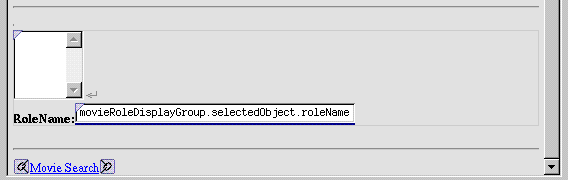

Creating a WebObjects Database Application
PATH
WebObjects 4.0 Documentation >
Getting Started With WebObjects
 Table of Contents
Table of Contents  Previous Section
Previous Section
Adding a Form
Now lay out the user interface used to view and edit the selected MovieRole. When you're done, it should look like the following:

- Add another horizontal rule after the repetition.
- Use the button (in the "Dynamic form elements" toolbar) to add a WOForm element between the two horizontal rules.
- While the Form text is highlighted, click the button to replace the text with a WOBrowser element.
- Beneath the browser (within the bounds of the new form), type the bolded text Role Name:.
- Add a text field.
- Bind the text field to movieRoleDisplayGroup.selectedObject.roleName.
Table of Contents  Next Section
Next Section